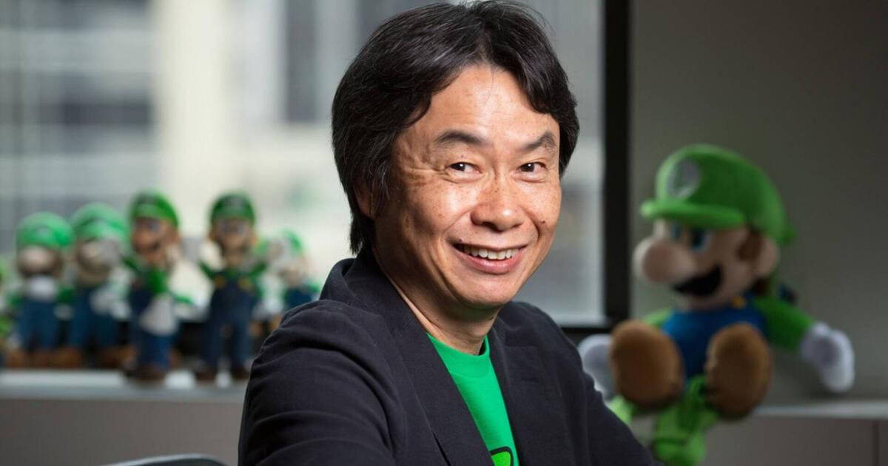

Shigeru Miyamoto

Shigeru Miyamoto (nacido el 16 de noviembre de 1952) es un director de videojuegos, productor, artista, diseñador y director general de Nintendo.
Nacido en la pequeña localidad japonesa de Sonobe, está considerado uno de los desarrolladores de videojuegos más innovadores, admirados, prolíficos, influyentes y aclamados.
Algunos videojuegos que Miyamoto ha creado:
| Título |
Fecha de Lanzamiento |
Plataforma |
| Mario Bros. |
1983 |
Arcade |
| The Legend of Zelda |
1986/1987 |
Famicom/NES |
| Super Mario Kart |
1992 |
Super Famicom/Super NES |
Algunos datos curiosos:
- La inspiración para la creación de Marios Bros. surgió cuando Miyamoto trabajaba en Nintendo y buscaba crear un juego arcade con una mecánica única. Así surgió la idea de un juego en el que el protagonista saltase y se moviese por diferentes niveles.
- The Legend of Zelda se inspiró principalmente en las "exploraciones" que Shigeru Miyamoto realizó de niño en las laderas, bosques y cuevas que rodeaban la casa de su infancia en Sonobe (Japón), donde se adentró en bosques con lagos recónditos, cuevas y aldeas rurales.
- Sobre Super Mario Kart, según las palabras de Shigeru Miyamoto en una entrevista de Iwata: "Decidimos ver qué aspecto tendría con Mario en uno de los karts, y todo el mundo pensó que quedaba aún mejor. Quién sabe, ¡quizá el diseñador que dibujó el personaje anterior tenía la intención de que se cambiara por Mario desde el principio!".
Clickea aquí para ver una entrevista a Shigeru Miyamoto!
Por favor, contesta esta breve encuesta: